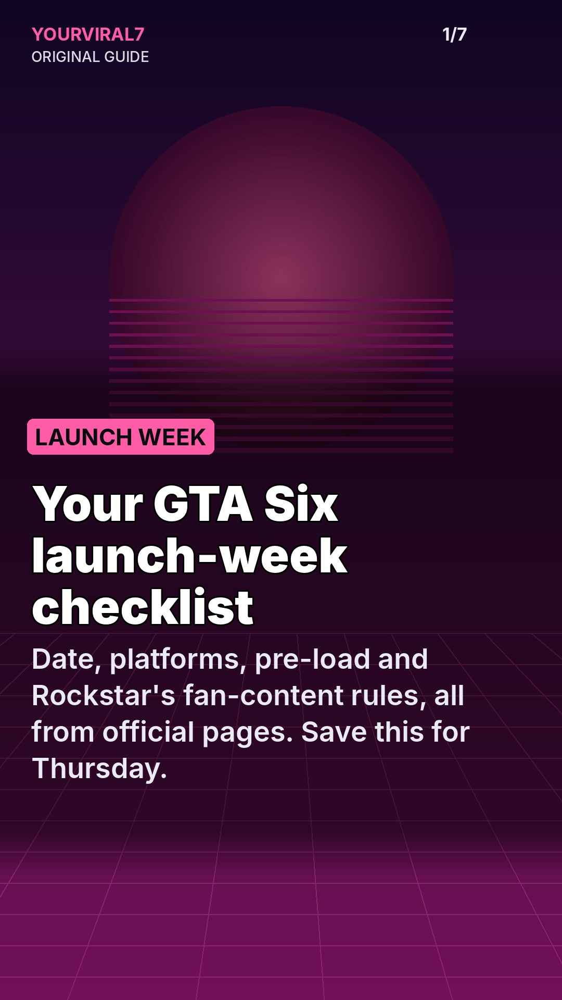
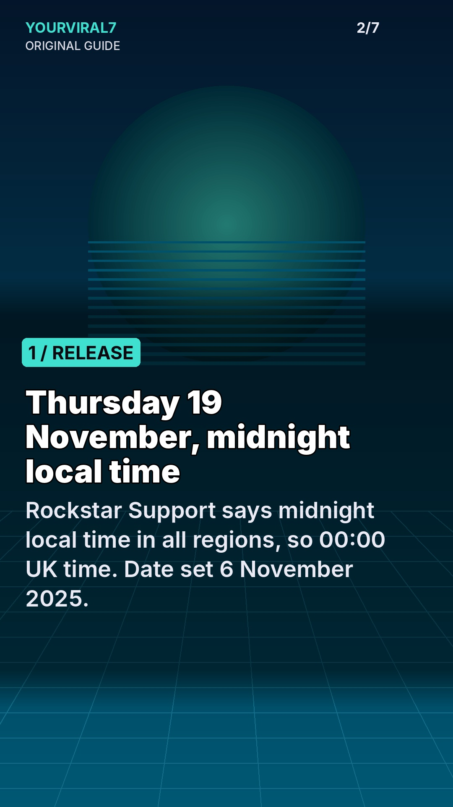
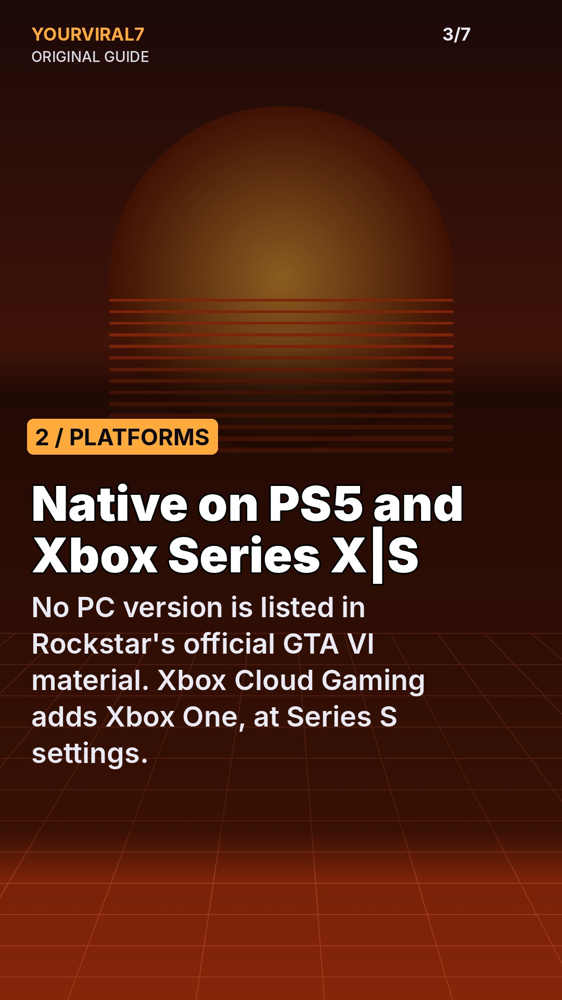
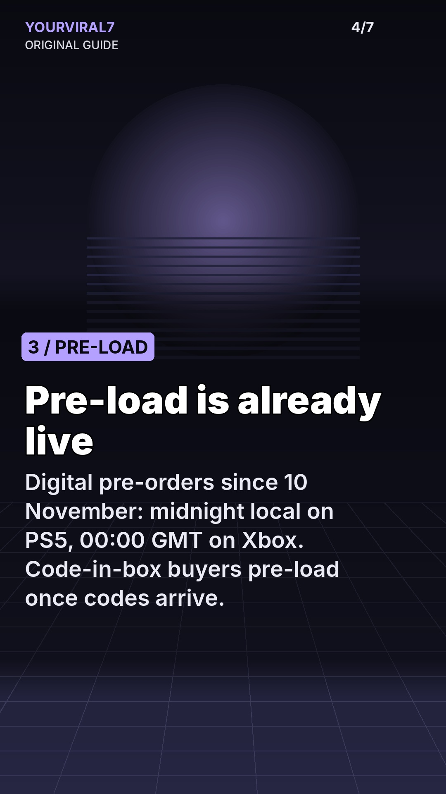
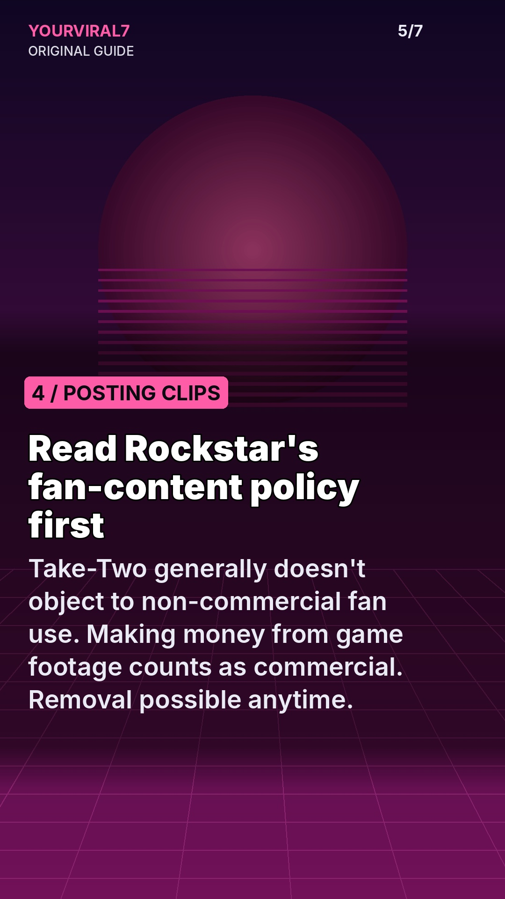
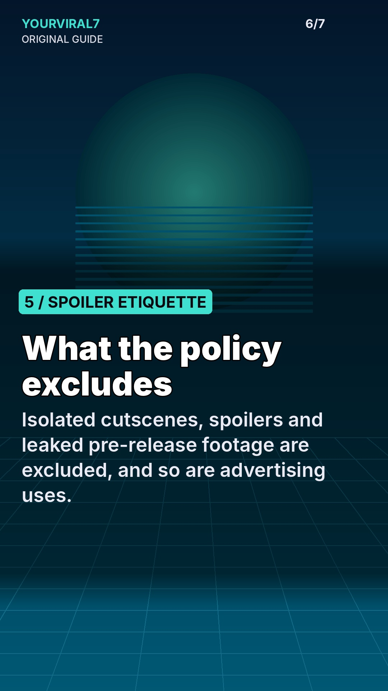
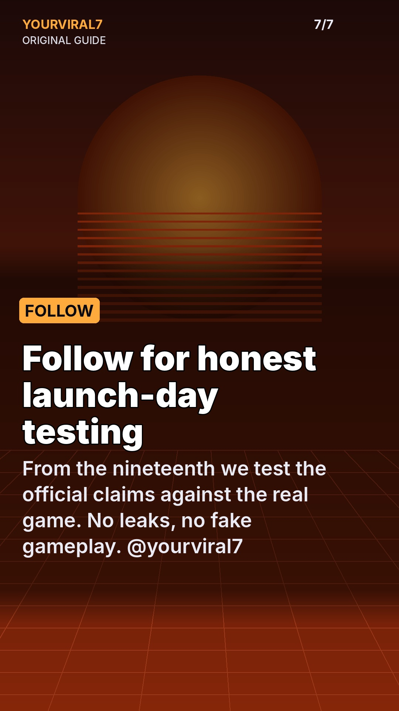

Post at: Mon 16 Nov 20:00 (UK)







Photo post: upload these slides in order in the TikTok app (Photo mode), add a sound from TikTok's library in-app.
Cover: cover.jpg · TikTok "AI-generated content" toggle: OFF for the photo post (no AI visuals or voice). If you post narrated_slideshow.mp4 instead: turn it ON and use caption_video_version.txt
After posting, confirm with: yv7 posted 15 <tiktok-url>